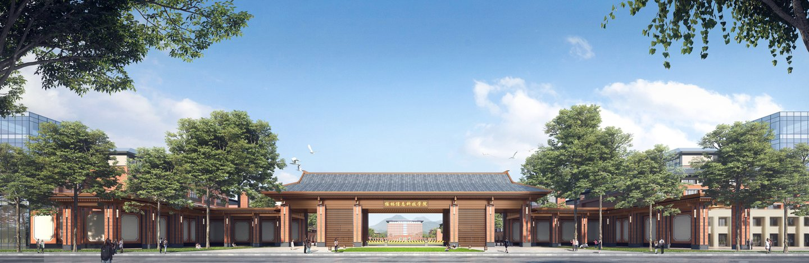
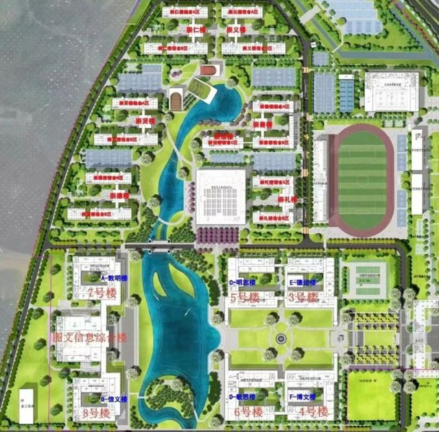

人工智能与大数据
拥抱人工智能时代，培养 AI、数据与安全领域的应用型人才。

桂林信息科技学院创建于 2001 年，前身为桂林电子工业学院信息科技学院，2021 年经教育部批准转设为独立设置的民办普通本科高校。学校赓续桂林电子科技大学的学科专业优势，以工为主、电子信息类学科专业特色突出，工学、管理学、艺术学等多学科协调发展。
学校坐落于山水甲天下的桂林市临桂区，秉持「以终为始、以生为本」的办学理念，立足桂林，服务广西，融入粤港澳大湾区，培养高素质应用型人才。


紧密围绕国家发展新质生产力的战略需求，优化专业布局，打造八大专业集群，更好地服务国家及区域经济社会发展。每个集群都能对上具体学院与专业。
专业设置整理自学校官网《2025 年专业设置（普本）》
数据统计至 2026 年 6 月，以官网最新公布为准
拥抱人工智能时代，培养 AI、数据与安全领域的应用型人才。
面向通信、软件与网络产业，打牢“软硬结合”的信息类人才基础。
对接智能制造与机器人产业，覆盖设计、制造到控制的全链条培养。
聚焦新能源与智能电气方向，服务能源电子与智能装备产业。
创意与技术融合，培养数字内容、虚拟现实与设计表达兼备的创作人才。
“商业 + 数据 + 管理”复合培养，锻造数字商业时代的新商科人才。
立足桂林国际旅游名城，面向东盟与粤港澳大湾区培养经贸与服务人才。
服务“健康中国”与文旅产业，培养体育健康领域应用型人才。
占地 1331 亩的校园里，光影、四季、建筑与青春都在讲述故事。左右拖动或点两侧卡片切换镜头，点中间那张可以放大细看。
 风光建筑
风光建筑
 风光建筑
风光建筑
 风光建筑
风光建筑
风光建筑
风光建筑
风光建筑
风光建筑
 风光建筑
风光建筑
新生报到、半小时打卡、活力运动——在一张可拖动的插画地图上，跟着路线把校园走一遍。到了学校，你就是熟客。

点击探索 →办证要带什么材料、东西坏了怎么报修、生活网点在哪儿——都整理在「校园服务」页，首页只做入口。
校园卡补办、学生证补办、助学贷款……材料清单、办理时间、地点都列清楚；缺哪项材料，还能查能不能先办。
去查材料 → B桌椅、灯管、空调、门锁坏了，拍照上传，AI 帮你把故障写清楚，提交后在看板上看处理进度。
去报修 → C食堂、超市、快递、打印、一卡通充值点在哪儿，校医室和常用电话一次找齐。
看网点 →办事信息整理自学校官网与现场信息；报修单仅本地记录，不推送后勤系统。
以下标题整理自学校官网近期发布内容（2026年8月—9月）。